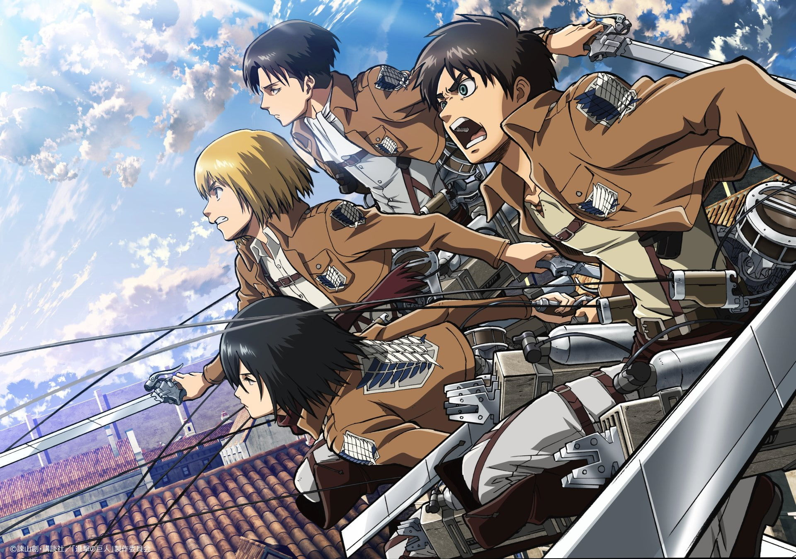

The Beginning
The Fall of Shiganshina
A determined boy from Shiganshina District whose life was changed forever by the appearance of the Colossal Titan. This event ignited a burning desire for freedom and vengeance.
The Soldier
104th Training Corps
Joining the military alongside his friends, Eren trained relentlessly, eventually graduating in the top 10 and joining the Survey Corps—humanity's best hope for survival.
"If you win, you live. If you lose, you die. If you don't fight, you can't win!"
The Titan
The Attack Titan
Discovering his ability to transform into a Titan, Eren became humanity's greatest weapon. He fought to reclaim lost territory and uncover the secrets hidden in his father's basement.
The Rebel
Beyond the Walls
The truth of the world was far more complex and cruel than he could have imagined. Burdened by memories of the past and future, Eren chose to walk a dark and lonely path forward.